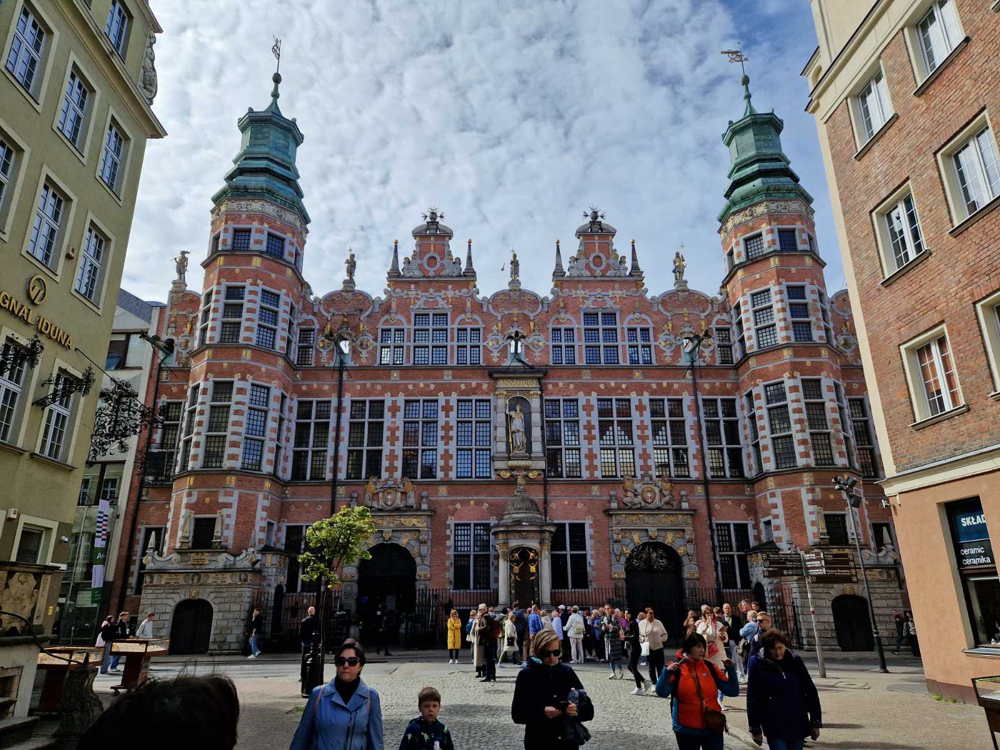

Armory
The armoury or in other words known as arsenal is a great relic of the past. It has been built between 1600-1605 as part of the wall of Gdansk. It has a bunch of symbols and statues within the middle standing Athena, the Greek god of strategy and intellect. It was designed to look intimidating for intruders who tried to invade Gdansk. It was destroyed in the second world war but has been rebuilt.

Golden Gate

The Golden Gate is an impressive feat of architecture standing near the middle of the city, it was the old city gate. It had a lot of golden details, and it was really luxurious and had 4 statues on each side. The outer ones represented what the city required from you and the inner ones that what it offered. It required Wisdom, Piety, Justice and Concord, in return it gave Peace, Liberty, Fortune and Fame.